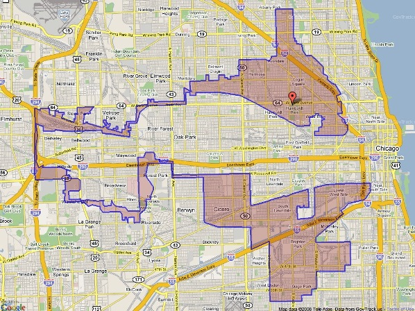

2014-11-06 01:43:00
美國於1975年在越戰鎩羽而歸，而盛產石油的蘇聯則在1973年能源危機之後大發横財，因此1970年代是整個冷戰過程中美國國力最低潮的時期。雷根當選總統之後，他的經濟自由化政策其實種下了產業空心化的種子，為富人大幅减税（最高所得税率從1980年的70%降到1988年的28%）更是後來貧富不均的禍根。不過雷根運氣很好，這些問題的後果都要二十幾年才明顯化；在他的任内，不但油價年年走低，大大幫助了美國經濟的復甦而惡化了蘇聯的財政，而且布里兹涅夫竟然重蹈美國在越戰的覆轍，陷入了阿富汗這個泥淖。另外就是雷根很會講笑話，美國老百姓大多没有獨立理性思考的能力，聽了總統笑話心情好了，久而久之竟以為雷根的工作成就也是值得高興的。
雷根笑話的主題常常是譏笑蘇聯的專制體制，其中一個是這様的：一個英國人、一個美國人和一個俄國人在聊天。英國人誇贊自己國家選舉機構的效率，說我今天投完票，明天一早起來，就可以在報紙上看到選舉結果。美國人說這不算什麼，我今天投票，到傍晚電視上的民意調查就可以知道誰赢誰輸。俄國人說這也没什麼了不起，我們蘇聯的選舉，在投票的前一天，大家就都知道結果了。
三十多年過去了，蘇聯早已解體，可是美國還在承受由雷根起始的經濟爛攤子。昨天（十一月4日）是2014年的期中選舉日，我没有去投票，因為我所在的選區是屬於深藍的（在美國，藍色代表民主黨，紅色是共和黨），選舉結果别說前一天，就是早十年都已經知道了，根本不差我這一票。這並不是一個巧合：美國眾議院有435個席位，其中195個來自深紅的選區，另有166個是深藍的（亦即紅藍支持率差别經常在8%以上者；詳見《獨霸政治2012》，《Monopoly Politics 2012》，http://www.fairvote.org/press/monopoly-politics-201/）。好玩的是，美國整體來說，民主黨人是多於共和黨的；那麼為什麼共和黨的鐵飯碗席位會多於民主黨的呢？這是因為共和黨是富人的黨，向來比民主黨募款募得多。而州級選舉的候選人不像聯邦級的那麼有名，卻又不像鎮級的那様大家都認識或至少聽說過，所以有財力做宣傳對選舉結果極為重要。在過去三十年裡，美國選舉的費用成指數上升，因而共和黨有越來越大的優勢，一直控制着大多數的州議院。而美國選區的劃分，是州議院的職權，結果是各州選區一再重劃，而共和黨在聯邦選舉的系統性優勢也越來越大。控制眾議院需要過半數，也就是218個席位；而只有435-195-166=74個席位是所謂的Toss Up，亦即丢銅板，各有大約一半的機率能赢。在這74個席位中，共和黨只要赢得218-195=23個就成為多數。那麼近年來共和黨控制眾議院的機率可以簡單地計算出來：標準差σ（Standard Deviation）是74的平方根=8.6，而測量的差值必須要大於（74-23）-23=28=3.3σ，結果落在3.3倍標準差之外的（單邊）機率大約為千分之一，也就是選舉投票之前，共和黨就有99.9%的機率能赢得眾議院。如果99.9%的政權掌控不叫專制，我不知道什麼才算是專制了。

這是伊利諾州第四選區的地圖，是芝加哥大都會的一部份；請注意上下两個社區是用左手邊的一連串公路和綠地才連起来的。十年前左右，共和黨就出銭請軟體公司寫了專業程式來替他“優化”選區劃分，現在這種奇形怪狀的選區，已經是美國的常態。其邏輯是基於史記孫子列傳裡田忌賽馬的“以君之下駟與彼上駟，取君上駟與彼中駟，取君中駟與彼下駟”，也就是把所有支持你敵手的社區盡量通通劃到一塊，其他的選區則劃成55%對45%的優勢。美國人把這個辦法叫做Gerrymandering，是200多年前（1812年，共和黨和民主黨都還未創立）由當時的麻省州長Elbridge Gerry所發明；因為選區扭來扭去像蠑螈（Salamander），所以叫Gerry-mander。
也正因為大多數選區都是由意識型態決定選舉結果，候選人只要能搞定黨内的人事獲得提名，即使人品再爛也一様能當選。昨天在田納西州（Tennessee）第四選區，共和黨提名的Scott Desjarlais輕鬆獲勝。這位老兄原本是醫生，2010年第一次當選眾議員，2012年連任後被爆發曾經在過去十多年誘姦了好幾個自己的女病人。其中一名懷孕之後，被他强迫去墮胎。我以前提過，共和黨是金主的黨，但是資本家當然不可能是多數，所以必須想辦法忽悠選票，其中一個很重要的策略，就是利用反墮胎來吸取基督教保守派的票。現在一個共和黨眾議員被抓包，性關係還算家常便飯，他强迫情婦去墮胎，居然還高票連任，可見這些Gerrymandered的鐵票倉，根本連政策政見都不管，更别提什麼選賢與能了。
如果你覺得田納西州是中西部的蠻荒之地，没有代表性，那麼再看看紐約第十一選區。共和黨的Michael Grimm也順利當選連任。這位兄台財務醜聞不斷，在今年四月又被聯邦檢察官發現有幾百萬的收入没有交税。在美國逃這麼多税，可是比台灣嚴重得多了，一般是要坐牢的。更誇張的是當一名記者拿這件事問他的時候，他罵了髒話，還威脅要把那名記者推下十公尺高的陽台；這段對話被錄了下來，在電視上一再播出，但是共和黨的選民還是不在乎。像這様的選舉，有什麼意義？值得犧牲成千上萬（在伊拉克就死了20到60萬人）的第三者生命來搞民主革命嗎？
【後註】2017年五月25日的補選中，共和黨候選人Greg Gianforte在公然暴打英國衛報的記者，並因而被起訴之後，仍然順利當選衆議員。